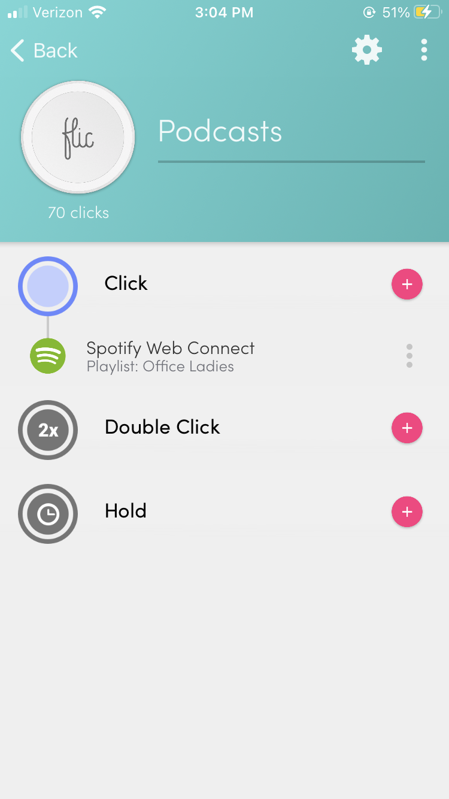

Programming
This took a little more time and thinking than I thought it would take. Getting the Flic set up on my phone wasn't hard, but it doesn't have a way to connect directly with my Google Home. I tried using IFTTT as a middleman between the Flic and the Google Home, but this direction isn't supported on IFTTT either. It was a lot of trial and error. Eventually, I found that I could connect to Spotify directly from the Flic app. I selected my Google Home as the primary playback device and I selected my playlist that containst the podcasts that I want to listen to. It's not the most streamlined or straightforward interface but it gets the job done.
